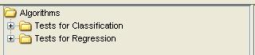
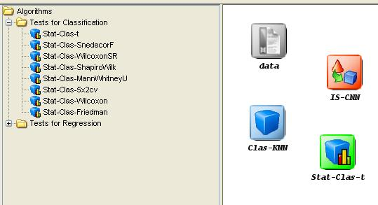

Statistical tests
This category includes several statistical modules available to contrast experiments performed with the KEEL software tool:

To add any statistical procedure to the current experiment, it is only needed to select it and click in the graph of the experiment:
